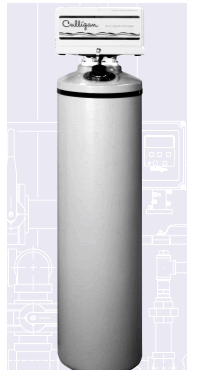
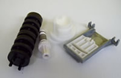

Models |
|||
| HI-FLO 2 PV-45A | HI-FLO 2 PV-45B | HI-FLO 2 PV-60A | HI-FLO 2 PV-60B |
| HI-FLO 2 PV-90A | HI-FLO 2 PV-90B | HI-FLO 2 PV-120A | HI-FLO 2 PV-120B |
Culligan Danville Part Number |
Date of Update |
|||
394 |
01013033 |
Seal Pak Ass. w/ Skotch Yoke -Mk100/89/HF2 | $88.84 | 3/13/19 |
721 |
00403304 |
Cartridge Assembly for HI-FLO Filters/Softeners | $58.66 |
3/13/19 |
857 |
00440934 |
Timer Motor - HI-FLO 2 | $28.86 | 3/13/2019 |
|
|
Cap for HI-FLO Softener /Filter, Noryl/Black(Old 4412054) | $15.88 | 3/13/19 |
3200 |
00449865 |
Control Valve Body - HI-FLO 2/Mk89 Adapters | $88.44 | 3/13/19 |
5124 |
01019525 |
375# Salt Tank for HI-FLO 2 PV45, 60B 18" x 38" | $182.55 |
3/13/19 |
6966 |
01018621 |
Set - Inlet & Outlet Valve Assemblies (plastic casings, contains new cartridges) 1.5" for HF2 and HF1 | $402.33 | 3/13/19 |
6980 |
01018954 |
Single Turbine Meter 2" w/1-1/2 Brass NPT Conn 2-250 gpm Hf2e Electronic | $531.48 | 3/13/19 |
Copyright 2013, Culligan Water Conditioning of Danville. | PO Box 244, Danville, Kentucky 40423-0244
859-236-4965 | 800-892-6414 (within Kentucky) | Fax 859-236-4965
Site Updated November 10, 2013 | Page last updated March 25, 2019
Roadside in Boyle County, Kentucky10247 |

Culligan HI-FLO 2 Water Softener10142 |

Cap for HI-FLO Softeners and Filters PN 1044 / 0040330210106 |
 Central Kentucky 10165
Central Kentucky 10165
|
|


Seal Pak Assembly PN 394 / 0101303310164 |

HI-FLO Cartridge Assembly PN 721 / 0040330410107 |

1.5" Meter PN 6980 / 0101895410116 |
For Price Quotation or Specifications:Contact Culligan of Danville Kentuckyphone: 800-892-6414 or 859-236-4965email: culliganky@qx.net |
The Culligan HI-FLO 2 water softener has been discontinued. However, Spare Parts are still available through Culligan of Danville Kentucky (located in Central KY) for HI-FLO 2 Water Softeners and HI-FLO 2 water filters for Commercial and Industrial end use customers in North America. The HI-FLO 2 system has been replaced wit the Culligan High Efficiency HE 1.5 Water Softeners and Water filters. Quotations / Cost Estimates are available for the Culligan HI 1.5 water softeners and water filters for capital projects.